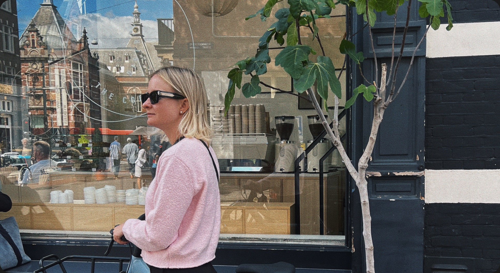

I grew up in Ukraine in a family where making things by hand was part of everyday life. My father and grandmother were always building, decorating, collaging, or simply making something new. Then Photoshop appeared. I was around ten when I first opened it and painted a few parrots — and somehow, that became my first introduction to digital creation.
I studied Fine Arts and started working as a designer in 2013, first as a web and UI/UX designer, and later moving into product design. Since 2020, I’ve been focused on product design, including several years as a Senior Product Designer and experience at Deloitte, where working at a very different scale taught me a lot about complex products, processes, and cross-functional teams.
In recent years, I’ve mostly worked as a founding designer, building products from zero to one and helping them grow. I enjoy being involved in the whole process — understanding people, exploring and validating ideas, shaping user journeys, and turning them into simple, useful products. I’m comfortable working end-to-end, from early concepts and research to final UI and product metrics.
Since 2023, I’ve been especially interested in AI and have been designing generative AI products alongside my broader product design work.
I still like making things — I just use a different set of tools now.